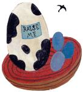

In March, a small relative of blackbirds and grackles that lives year-round in the southern U.S. but spreads north in spring may become quite noticeable on the ground in fields and pastures. Named for their feeding habits, cowbird flocks often gather near horses and cows to feast on the insects those animals attract. But the cowbird's behavior at nesting time is what has earned it its fame - or rather, its notoriety.
Male cowbirds are about seven inches long with a brown head and neck the rest of the body is black and iridescent. The all-gray female is less distinctive, but she can typically be seen flocking with the males.
The cowbird can seem a rather comical creature with a slow, awkward walk and often upraised tail.
Less amusing is the cowbirds' habit of laying their eggs in the nests of other birds. Most birds need 20 minutes to an hour to lay an egg, but the female cowbird takes less than a minute; she leaves her egg in secret while the nest's rightful owner is away. The unwitting nesters will usually accept the cowbird egg and raise the baby cowbird as their own.
Unfortunately, cowbird eggs hatch sooner than the eggs of other species and the young cowbirds grow quickly, using their size to their advantage in getting more food from the parents. This cowbird parasitism is actually endanger ing a number of species of birds.
|
 |
|
|